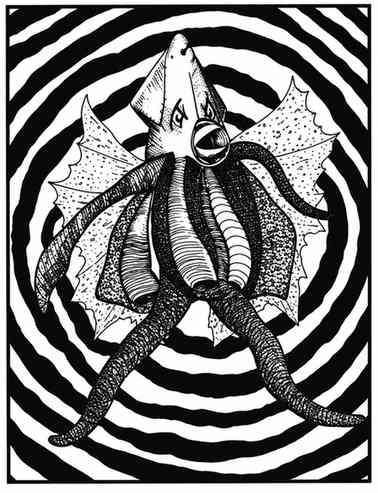

深渊幽灵 · Morkoth
 |
|
深渊幽灵（或称莫洛克）是一种昏暗、幽影般的怪物，常被称为“深渊幽灵”。它或许是类人生物，但相关报告各不相同；它栖息在黑暗的深水中。
深渊幽灵的巢穴由一系列螺旋通道组成，怪物潜伏在通道交汇处。任何经过通道的生物都会被催眠，因为通道本身形成了催眠图案。受害者在不知不觉间接近深渊幽灵，除非以 −4 惩罚通过豁免检定，否则会被怪物的法术魅惑；随后受魅惑者会在怪物方便时被吞食。通道的建造方式会阻止大型生物进入，巢穴通常有 6 条通道；若受害者靠近到 6 寸以内，催眠效果会解除。
深渊幽灵以咬噬攻击。受魅惑的生物会在毫无察觉的情况下承受攻击。任何形式的法术攻击都会被它反射，使施法者受到影响；若法术有范围效果，附近其他生物也可能受影响。不过若同时施展解除魔法，深渊幽灵便无法反射法术，此时魔法有 50% 的机会影响它，即使成功，深渊幽灵仍可进行豁免检定。